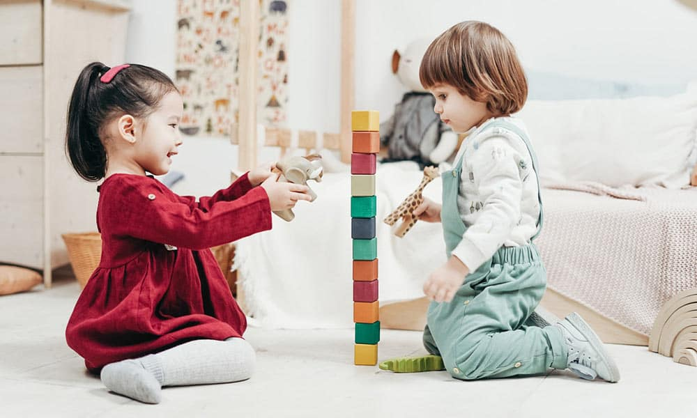
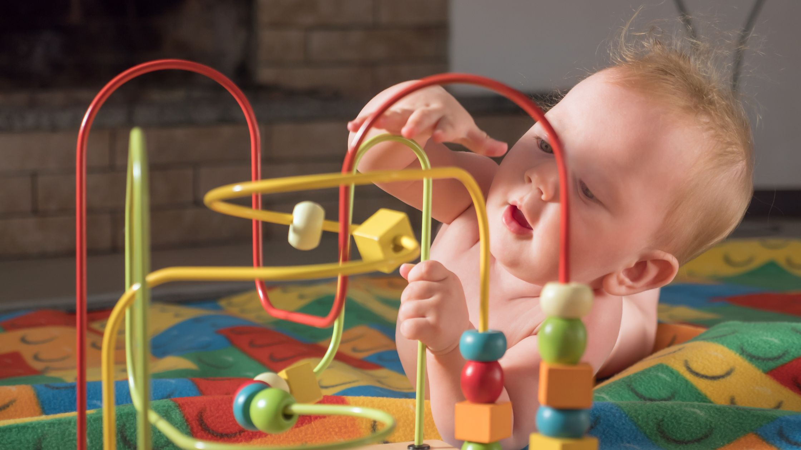
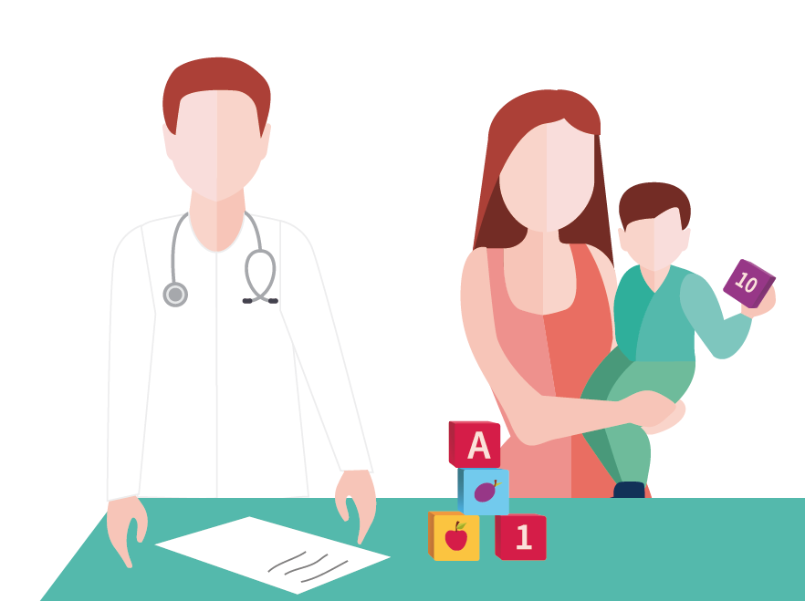
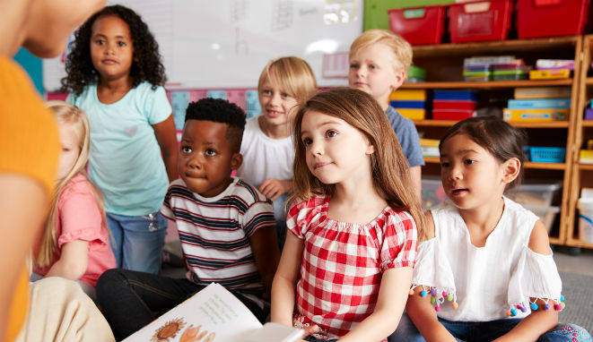
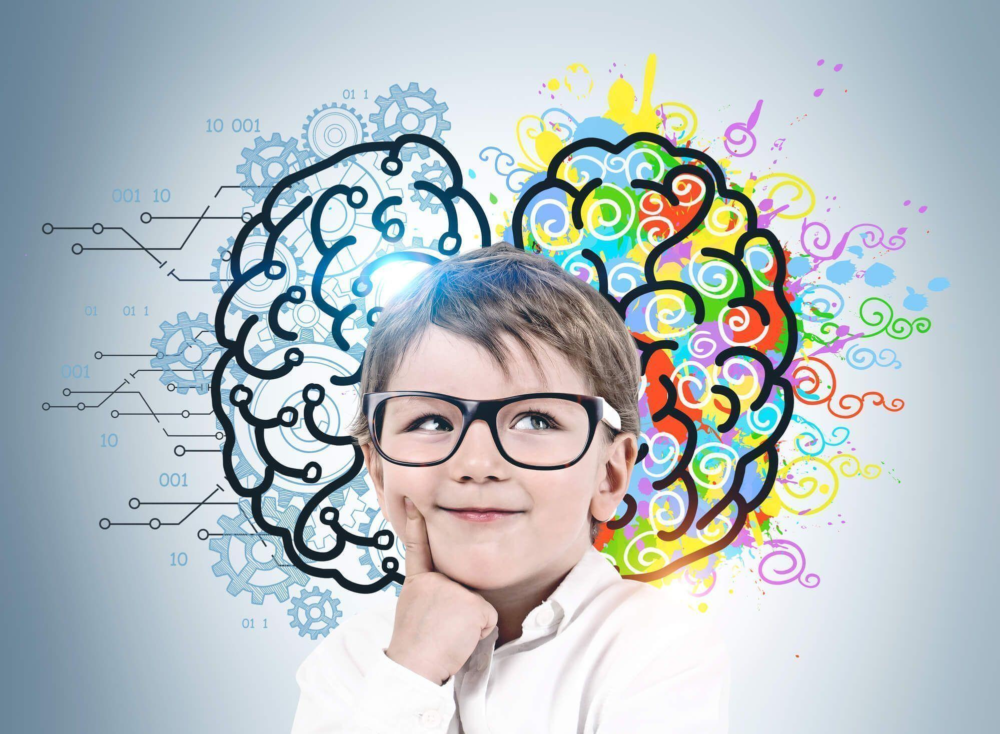
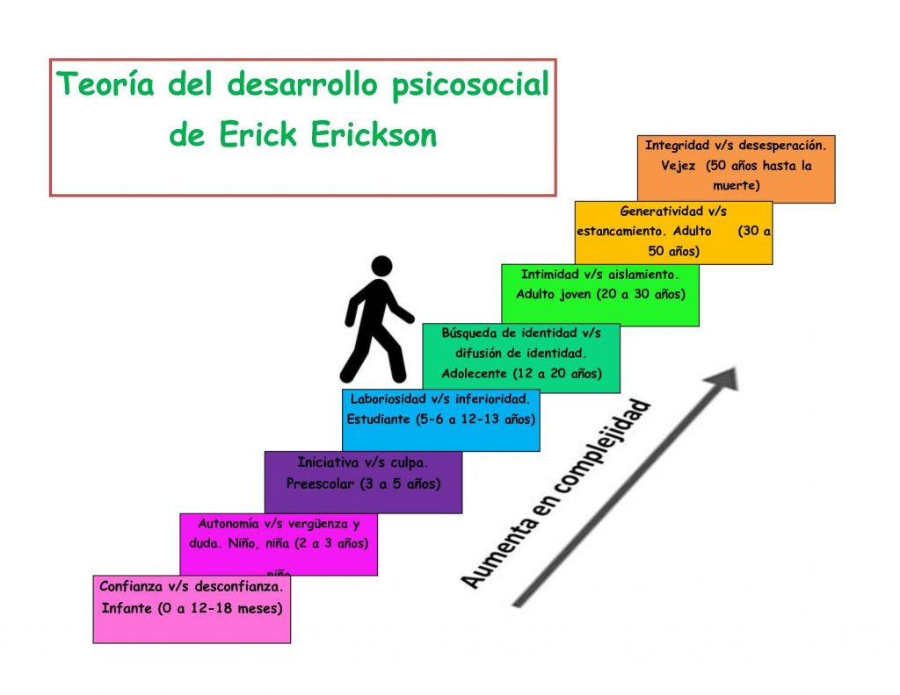
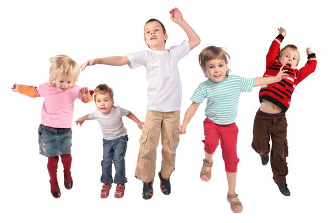
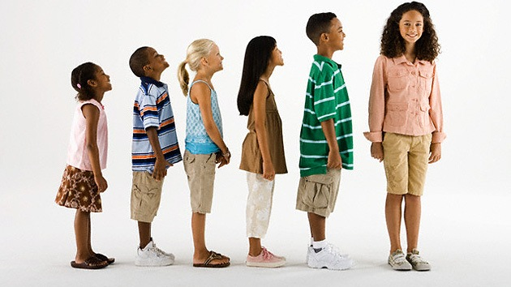
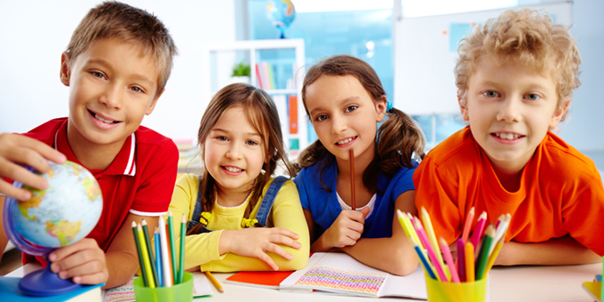
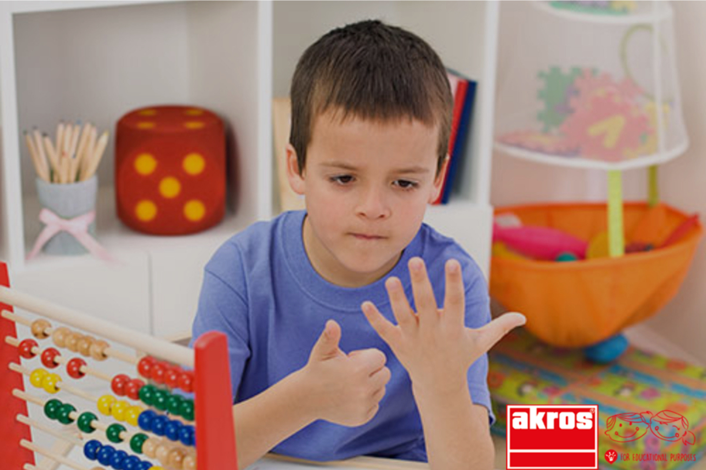

Niñez temprana
(aprox. 3 a 6 años)
Niñez media
(aprox. 6 a 11 años)
🌱 Niñez temprana 🌱
La niñez temprana es una etapa fundamental del desarrollo humano que comprende aproximadamente de los tres a los seis años de edad. Durante este periodo, los niños experimentan avances significativos en su cuerpo, pensamiento, emociones y relaciones sociales. Papalia señala que esta etapa es crucial porque en ella se consolidan habilidades básicas que permitirán el desarrollo escolar, la autonomía personal y la integración social posterior.
Desarrollo físico
En la niñez temprana, el crecimiento físico continúa de forma más lenta y estable en comparación con los primeros años de vida, pero se vuelve más organizado y coordinado. Los niños aumentan de estatura y peso de manera progresiva, adquiriendo un cuerpo más esbelto y proporciones más similares a las del adulto. El desarrollo del sistema nervioso sigue avanzando, especialmente en áreas del cerebro relacionadas con la atención, el control motor y la autorregulación. Esto se refleja en un mejor control de los movimientos y mayor precisión en las acciones.

Habilidades motoras
La motricidad gruesa se fortalece notablemente: los niños pueden correr con mayor seguridad, saltar en un solo pie, trepar, lanzar y atrapar objetos.
La motricidad fina muestra grandes avances, permitiéndoles escribir trazos más definidos, usar tijeras, abotonar su ropa, servirse alimentos y manipular objetos pequeños.

Salud y Seguridad
En esta etapa, los niños requieren menos horas de sueño que en la infancia, aunque aún son comunes algunos problemas como pesadillas o resistencia a dormir. Papalia destaca que los accidentes representan uno de los principales riesgos para la salud en la niñez temprana, por lo que la supervisión adulta es esencial. La nutrición equilibrada y la actividad física regular son factores clave para un desarrollo saludable. Desarrollo cognoscitivo Desde la perspectiva de Jean Piaget, los niños en esta etapa se encuentran en la fase preoperacional, caracterizada por el uso del pensamiento simbólico. Esto permite que los niños representen mentalmente objetos y situaciones, lo que se manifiesta en el lenguaje, el dibujo y el juego imaginativo.

Características del pensamiento
El pensamiento es egocéntrico, lo que significa que los niños tienen dificultad para comprender puntos de vista distintos al propio. Presentan centración, enfocándose en un solo aspecto de la realidad e ignorando otros. Aún no comprenden conceptos lógicos como la conservación de cantidad, número o volumen.

Memoria e inteligencia
Durante la niñez temprana, la memoria mejora de forma considerable. Los niños recuerdan eventos con mayor claridad y comienzan a utilizar estrategias simples de memoria, aunque todavía dependen mucho del contexto y de la guía adulta. La inteligencia se evalúa mediante pruebas psicométricas adaptadas a su edad, pero Papalia subraya que el desarrollo intelectual está profundamente influido por el entorno, la estimulación temprana y las experiencias educativas.

Lenguaje
El desarrollo del lenguaje es uno de los logros más destacados de esta etapa. El vocabulario se amplía rápidamente y las oraciones se vuelven más largas y complejas. Los niños mejoran su pronunciación, comprensión gramatical y habilidades comunicativas. El lenguaje se convierte en una herramienta esencial para el pensamiento, la regulación de la conducta y la interacción social. Desde el enfoque de Vygotsky, el lenguaje cumple una función clave como medio para el aprendizaje y la autorregulación, especialmente a través del habla privada, cuando los niños se hablan a sí mismos para resolver problemas.
Desarrollo psicosocial
El desarrollo psicosocial en la niñez temprana implica avances importantes en la identidad, las emociones y las relaciones sociales. Desarrollo emocional Los niños comienzan a identificar y expresar emociones de forma más clara. Surgen emociones complejas como la culpa, la vergüenza, el orgullo y la empatía. Aunque todavía requieren apoyo adulto, gradualmente aprenden a regular sus emociones y comportamientos. El autoconcepto se vuelve más definido y suele basarse en características observables, como la apariencia física, habilidades y preferencias. La autoestima depende en gran medida de la retroalimentación de padres, cuidadores y maestros.
Etapa psicosocial según Erikson
De acuerdo con Erik Erikson, la principal crisis de esta etapa es iniciativa vs. culpa. Los niños muestran un fuerte deseo de explorar, planear actividades y asumir nuevos retos. Cuando reciben apoyo y orientación, desarrollan iniciativa y confianza; cuando son excesivamente castigados o controlados, pueden experimentar sentimientos de culpa y temor a actuar.

Relaciones sociales y juegos
El juego es una actividad central en la niñez temprana y cumple funciones cognitivas, sociales y emocionales. Papalia destaca el juego dramático o simbólico, en el que los niños representan roles, situaciones imaginarias y experiencias de la vida cotidiana. Este tipo de juego favorece la creatividad, el desarrollo del lenguaje, la empatía y la comprensión de normas sociales. Las relaciones con otros niños se vuelven más frecuentes y complejas. Se desarrollan habilidades como compartir, cooperar, negociar y resolver conflictos. Las amistades comienzan a basarse en intereses comunes y actividades compartidas.
Educación en la niñez temprana
La educación preescolar cumple un papel fundamental en el desarrollo integral del niño. Los programas educativos pueden centrarse en el desarrollo académico o en el desarrollo social y emocional, aunque Papalia resalta la importancia de un enfoque equilibrado que respete las necesidades del niño. La transición al jardín de niños representa un cambio significativo, ya que implica mayor estructura, reglas y demandas sociales. Una experiencia educativa positiva puede favorecer la motivación por el aprendizaje y la adaptación escolar.
lmportancia de la niñez temprana
Papalia concluye que la niñez temprana es una etapa decisiva del ciclo vital, ya que en ella se establecen las bases del aprendizaje, la personalidad, la conducta social y la regulación emocional. Las experiencias tempranas, el entorno familiar, la educación y la cultura influyen profundamente en el desarrollo presente y futuro del individuo

🌿 Niñez media 🌿
La niñez media, que abarca aproximadamente de los 6 a los 1 1 años, es una etapa clave del desarrollo humano, ya que los niños consolidan habilidades físicas, cognitivas, emocionales y sociales que serán fundamentales para su vida adulta. Durante este periodo, la escuela y las relaciones con los compañeros adquieren una gran importancia, al mismo tiempo que la familia sigue siendo una base esencial de apoyo.
Desarrollo físico y salud
En la niñez media, el crecimiento físico es más lento y constante que en la primera infancia. Los niños aumentan de estatura y peso de manera gradual, desarrollan mayor fuerza muscular y mejoran notablemente su coordinación motora gruesa y fina. Esto les permite realizar actividades más complejas como deportes, escritura más precisa, dibujo detallado y tareas manuales. La salud en esta etapa suele ser buena, aunque pueden presentarse enfermedades comunes como infecciones respiratorias. La nutrición adecuada, el ejercicio regular y el descanso son fundamentales para un desarrollo saludable. Papalia destaca que los hábitos adquiridos en esta etapa, como la alimentación y la actividad física, pueden influir en la salud a largo plazo.

Desarrollo cognitivo
Desde el punto de vista cognitivo, los niños se encuentran en la etapa de las operaciones concretas, según Jean Piaget. Esto significa que ya pueden pensar de manera lógica sobre situaciones reales y concretas, aunque aún tienen dificultad con conceptos abstractos. Mejoran habilidades como: La memoria La atención La capacidad para resolver problemas

El razonamiento lógico
El lenguaje se vuelve más complejo y preciso, lo que favorece el aprendizaje escolar. La lectura, la escritura y las matemáticas se desarrollan de forma importante, y la escuela se convierte en un espacio central para el crecimiento intelectual. Papalia también resalta el papel del contexto educativo y de los maestros en el desarrollo del pensamiento y la motivación académica.

El razonamiento psicosocial
En la niñez media, los niños comienzan a construir una imagen más clara de sí mismos. Según Erik Erikson, esta etapa corresponde al conflicto de industria vs. inferioridad, en el cual los niños buscan sentirse competentes y capaces. El éxito escolar y el reconocimiento por parte de adultos y compañeros fortalecen su autoestima, mientras que el fracaso constante puede generar sentimientos de inferioridad. Las relaciones con los pares se vuelven especialmente importantes. Los niños aprenden a cooperar, competir, respetar reglas y resolver conflictos. La amistad se basa cada vez más en la confianza, la lealtad y los intereses compartidos. La familia sigue siendo una fuente esencial de apoyo emocional, aunque los niños buscan mayor independencia. La forma de crianza, la comunicación familiar y el apoyo académico influyen de manera significativa en el desarrollo emocional y social.
Desarrollo moral
Durante esta etapa, los niños avanzan en su comprensión del bien y el mal. Empiezan a considerar las intenciones detrás de las acciones y no solo las consecuencias. También desarrollan un mayor sentido de justicia y respeto por las normas, especialmente en contextos escolares y sociales. Importancia de la niñez media Papalia subraya que la niñez media es una etapa fundamental porque sienta las bases para la adolescencia. En este periodo se fortalecen la autoestima, las habilidades sociales, el rendimiento académico y los hábitos de salud. Un desarrollo adecuado en esta etapa favorece una transición más saludable hacia etapas posteriores del ciclo vital.

Museum-Grade Fine Art Prints
Hand-selected archival pigment prints on premium Japanese Kozo paper, printed using 12-color K3 pigment technology for 200+ year archival stability.
Each print includes detailed metadata: GPS coordinates, elevation, weather conditions, and the complete story behind the capture.
- Limited editions of 25 pieces maximum
- Hand-signed and numbered by the artist
- Custom museum-quality framing available
- Certificate of authenticity with each purchase
- Available in sizes up to 72"×48"